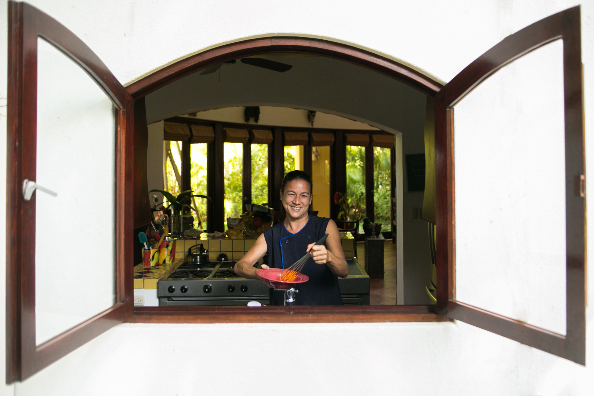
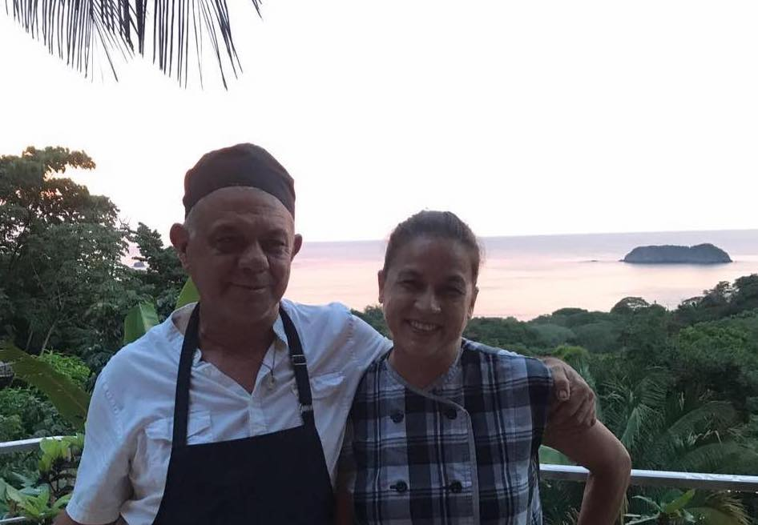

<div class="container">
  <div class="row">
    <div class="col-md-6">
      <div class="card">
        
        <div class="card-body">
          <h1 class="card-title">Desiree</h1>
          <p class="card-text">American, French, and Vietnamese, she moved to Costa Rica 30 years
            ago blending her multi-national background into an innovative fusion of cuisines.
            Seafood and locally sourced produce are some of her specialties, as well old-fashioned comfort favorites.
          </p>
        </div>
      </div>
    </div>
    <div class="col-md-6">
      <div class="card">
        
        <div class="card-body">
          <h2 class="card-title">Juan</h2>
          <p class="card-text">High school teacher of horticulture by day, chef and bartender by night.
              Juan is a master of the grill and of mixology. Whether it's a whole fish wrapped in banana leaves,
               or a made-from-scratch Margarita, guests are sure to enjoy the meaning of authentic Costa Rican hospitality.</p>
        </div>

      </div>
  </div>
</div>
